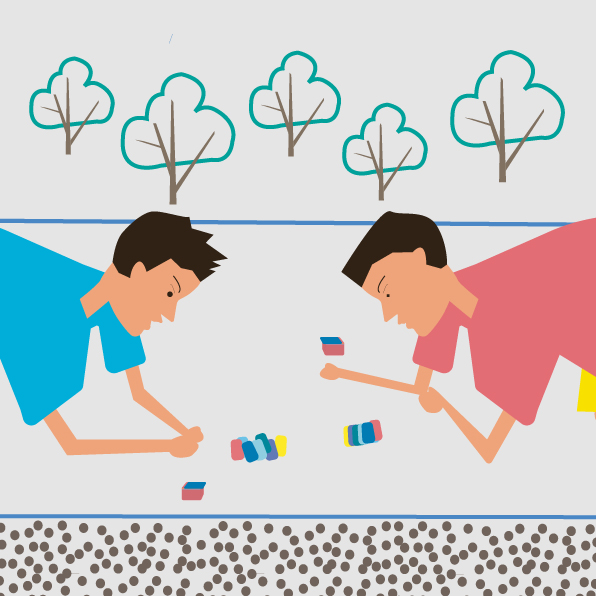

LOGO
目录
眼睛
嘴巴
手脚
大脑
耳朵

吹鸟笛 夹塘地区1906年前就有逃荒农民集居，但土地盐碱重，产量极低。为维持生计，有的农民半农半渔，有的开始利用滩涂、野生资源，逐渐形成以捕鸟为生计的群体，并在实践中创造了许多诱捕鸟类的手艺。其中，摹鸟笛技应运而生，且世代相传、子承父技。至解放前后，境内专业捕鸟者达30余户、70余人，摹鸟笛技已广为应用。 人们都赞叹鸟儿委婉动听的鸣叫声，都想模仿它。鸟笛就是模仿鸟叫的工具。很多人小时候没有玩具玩，就自己动手做玩具玩，鸟笛是其中之一，这种鸟笛能逼真地模仿鸟叫，它的发生原理同笛子差不多，但结构却比笛子要简单的多。 使用方式是：把鸟笛放到清水里浸湿，用嘴吹响哨子，同时用手不断调节推拉杆。美妙动听的鸟鸣声音就会从鸟笛里飞扬出来。推拉杆往上推，空气柱短，音调就高;推拉杆往下拉，空气柱长，音调就低。